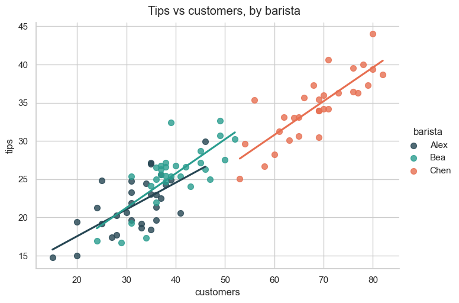
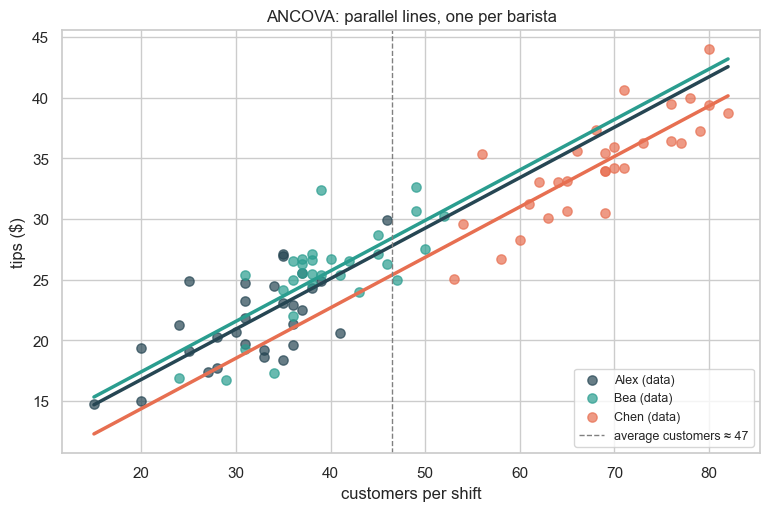

ANCOVA — The Case of the Missing Tip Money¶
Data 200 · Applied Statistical Analysis · Instructor: Aayush Regmi
Welcome back to Bean & Co., the cosiest café on the block.
It's Monday morning. Maria, the manager, is staring at her staff spreadsheet with a furrowed brow. She has three baristas — Alex, Bea, and Chen — and at the end of every shift each one drops their tip jar on the counter. Over the last month she has noticed something: Chen always brings home the most tips. Should she give Chen a raise? Promote them? Make them barista-of-the-month?
Before she does, our job is to find out: is Chen actually a better barista, or did Chen just happen to work the busiest shifts?
That "or" is exactly what ANCOVA (Analysis of Covariance) was invented for. By the end of this notebook, the mystery will be solved — and you will have a tool you can use whenever a continuous variable you didn't control for is muddying a group comparison.
Learning Objectives¶
By the end of this notebook you will be able to:
- Recognise when a one-way ANOVA is misleading because of a hidden continuous covariate.
- Set up an ANCOVA in
statsmodelswith one categorical factor and one (or more) covariates. - Compute and interpret adjusted group means — what each group's outcome would look like if every group had the same level of the covariate.
- Read the ANCOVA assumption that often surprises people: the parallel-slopes (or homogeneity-of-regression) assumption.
- Interpret the regression coefficients of an ANCOVA fit and tie them back to the OLS picture from the Linear Regression and Parameter Estimation notebooks.
Prerequisite: you've seen one-way ANOVA in the ANOVA notebook. If not, peek at §3 of that notebook first.
Setup¶
import numpy as np
import pandas as pd
import matplotlib.pyplot as plt
import seaborn as sns
from scipy import stats
import statsmodels.api as sm
from statsmodels.formula.api import ols
from statsmodels.stats.anova import anova_lm
sns.set_theme(style="whitegrid")
plt.rcParams["figure.figsize"] = (8, 5)
rng = np.random.default_rng(7)
1. The Mystery — A Month at Bean & Co.¶
Maria pulls 30 shifts per barista from her records. Each row tells us:
- which barista worked the shift,
- how many customers walked in (the covariate — a number Maria did not control),
- the total tips collected at the end of the shift (in dollars).
Here's the catch we will pretend Maria hasn't noticed yet: Chen tends to be scheduled on the busy weekend shifts. The data we synthesise reflects exactly that confound.
n_each = 30
# Each barista has a *true* tip-earning skill (extra dollars per shift
# beyond what the foot traffic explains).
skill = {"Alex": 4.0, "Bea": 5.0, "Chen": 3.0}
# But the schedule is unfair — Chen mostly works busy shifts.
avg_customers = {"Alex": 35, "Bea": 40, "Chen": 70}
rows = []
for b in ["Alex", "Bea", "Chen"]:
customers = rng.normal(loc=avg_customers[b], scale=8, size=n_each).clip(10, None)
# Tips = base + 0.40 per customer + barista skill + noise
tips = 5 + 0.40 * customers + skill[b] + rng.normal(scale=3, size=n_each)
rows.append(pd.DataFrame({
"barista": b,
"customers": customers.round(0).astype(int),
"tips": tips.round(2),
}))
shifts = pd.concat(rows, ignore_index=True)
shifts.sample(8, random_state=0)
| barista | customers | tips | |
|---|---|---|---|
| 2 | Alex | 33 | 19.19 |
| 13 | Alex | 28 | 20.25 |
| 53 | Bea | 39 | 25.38 |
| 41 | Bea | 24 | 16.92 |
| 66 | Chen | 53 | 25.05 |
| 30 | Bea | 42 | 26.58 |
| 45 | Bea | 46 | 26.33 |
| 43 | Bea | 39 | 32.42 |
# A first look — average tips by barista (the number Maria has been staring at)
shifts.groupby("barista")[["tips", "customers"]].mean().round(2)
| tips | customers | |
|---|---|---|
| barista | ||
| Alex | 21.66 | 31.73 |
| Bea | 25.49 | 39.40 |
| Chen | 34.53 | 68.47 |
Chen averages noticeably more tips. Case closed? Let's run the test Maria would naively reach for first.
2. The Naive Verdict — One-Way ANOVA¶
If we ignore the customer counts and just compare tips across
baristas, this is a textbook one-way ANOVA on tips ~ C(barista).
naive = ols("tips ~ C(barista)", data=shifts).fit()
print("Naive one-way ANOVA — tips ~ barista\n")
print(anova_lm(naive))
print("\nGroup-mean offsets (Alex is the baseline):")
print(naive.params.round(2))
Naive one-way ANOVA — tips ~ barista
df sum_sq mean_sq F PR(>F)
C(barista) 2.0 2621.491247 1310.745623 84.162407 4.576579e-21
Residual 87.0 1354.938313 15.574004 NaN NaN
Group-mean offsets (Alex is the baseline):
Intercept 21.66
C(barista)[T.Bea] 3.83
C(barista)[T.Chen] 12.87
dtype: float64
The p-value for C(barista) is tiny → "the baristas differ". The
coefficients say Bea earns ~\(X more than Alex and Chen earns ~\)Y
more than Alex.
Maria is about to print Chen a certificate. Hold on. Before we celebrate, let's look at the picture our naive analysis ignored.
3. The Plot Twist — Customer Count Has Been Hiding in Plain Sight¶
Plot tips against the number of customers, colouring each point by barista, and the truth jumps off the page:
g = sns.lmplot(
data=shifts, x="customers", y="tips", hue="barista",
palette=["#264653", "#2a9d8f", "#e76f51"],
height=5, aspect=1.4, ci=None, scatter_kws={"s": 50, "alpha": 0.8},
)
g.fig.suptitle("Tips vs customers, by barista", y=1.02)
plt.show()

Three things are now obvious:
- Tips go up with customer count. Of course they do — busier shifts mean more tippers.
- Chen's points are clustered way to the right. Chen mostly worked very busy shifts.
- For a given customer count, Chen is not really the highest! Look at any vertical slice (e.g. customers ≈ 50): Bea's line is the highest, then Alex, then Chen.
The naive ANOVA didn't see this because it averaged over all customer counts. We need a method that adjusts for customer count before comparing baristas. Enter ANCOVA.
4. ANCOVA — ANOVA with a Covariate Sidekick¶
An ANCOVA is just an ANOVA with one (or more) continuous covariates added to the model:
What the covariate does is soak up the variation in tips that
comes from customer count first, leaving the barista coefficients to
explain only what's left over — the part that really is due to who
was behind the bar.
Algorithmically, this is the same (X^\top X)^{-1} X^\top y we've been
using all along — we are just adding a column to the design matrix.
ancova = ols("tips ~ customers + C(barista)", data=shifts).fit()
print("ANCOVA — tips ~ customers + C(barista)\n")
print(anova_lm(ancova, typ=2))
ANCOVA — tips ~ customers + C(barista)
sum_sq df F PR(>F)
C(barista) 44.670593 2.0 3.216638 4.495878e-02
customers 757.782079 1.0 109.132678 5.689204e-17
Residual 597.156234 86.0 NaN NaN
print("ANCOVA coefficients:")
print(ancova.params.round(2))
ANCOVA coefficients:
Intercept 8.46
C(barista)[T.Bea] 0.64
C(barista)[T.Chen] -2.41
customers 0.42
dtype: float64
Compare with the naive verdict. Now read the barista coefficients
holding customers constant:
Intercept— Alex's expected tips whencustomers = 0(a hypothetical empty café — useful as a reference, not as a prediction).customers— every extra customer adds about $0.40 in tips, whoever is working.C(barista)[T.Bea]— Bea earns this much more than Alex at the same customer count.C(barista)[T.Chen]— Chen's bonus relative to Alex at the same customer count.
The picture has flipped: Bea is the most efficient tipper-per-shift, Alex is in the middle, and Chen is at the bottom — once you put them all on the same playing field.
5. The "What If They All Had the Same Traffic?" Numbers¶
ANCOVA gives us a clean way to ask: if every barista had worked shifts with the same average number of customers, what would each one have earned? These are called adjusted means (or estimated marginal means, EMMs).
They're computed by plugging the overall mean of customers into
the fitted regression for each barista.
mean_customers = shifts["customers"].mean()
print(f"Overall average customers per shift: {mean_customers:.1f}\n")
# Predict tips for each barista at the average customer count
predict_at = pd.DataFrame({
"customers": [mean_customers] * 3,
"barista": ["Alex", "Bea", "Chen"],
})
predict_at["adjusted_tips"] = ancova.predict(predict_at).round(2)
predict_at["raw_mean_tips"] = (
shifts.groupby("barista")["tips"].mean().reindex(predict_at["barista"]).values.round(2)
)
predict_at
Overall average customers per shift: 46.5
| customers | barista | adjusted_tips | raw_mean_tips | |
|---|---|---|---|---|
| 0 | 46.533333 | Alex | 27.82 | 21.66 |
| 1 | 46.533333 | Bea | 28.45 | 25.49 |
| 2 | 46.533333 | Chen | 25.41 | 34.53 |
The raw mean tips column is what Maria saw in her spreadsheet. The adjusted_tips column is what each barista would earn on a shift of typical busyness. Bea wins on the level playing field, by a comfortable margin.
Promotion goes to Bea. Mystery solved.
6. The Picture ANCOVA Draws¶
ANCOVA fits one regression line per group, all sharing the same slope, but with different intercepts. The vertical gap between the lines is the adjusted group difference.
fig, ax = plt.subplots(figsize=(9, 5.5))
colors = {"Alex": "#264653", "Bea": "#2a9d8f", "Chen": "#e76f51"}
x_grid = np.linspace(shifts["customers"].min(),
shifts["customers"].max(), 100)
for b in ["Alex", "Bea", "Chen"]:
sub = shifts[shifts["barista"] == b]
ax.scatter(sub["customers"], sub["tips"], color=colors[b], s=45,
alpha=0.7, label=f"{b} (data)")
# ANCOVA line for this barista — same slope, different intercept
pred = ancova.predict(pd.DataFrame({"customers": x_grid,
"barista": [b] * len(x_grid)}))
ax.plot(x_grid, pred, color=colors[b], lw=2.5)
ax.axvline(mean_customers, color="gray", ls="--", lw=1,
label=f"average customers ≈ {mean_customers:.0f}")
ax.set_xlabel("customers per shift"); ax.set_ylabel("tips ($)")
ax.set_title("ANCOVA: parallel lines, one per barista")
ax.legend(loc="lower right", fontsize=9); plt.show()

Notice the three lines are parallel. That parallelism is not a
coincidence — it is baked into ANCOVA. The model assumes the
covariate has the same effect (customers → tips slope ≈ $0.40 per
customer) for every group.
If that assumption is wrong, ANCOVA is the wrong tool. Let's check it.
7. The Assumption Everyone Forgets — Parallel Slopes¶
ANCOVA inherits the assumptions of ANOVA (independence, residual normality, homogeneity of variance) plus one extra:
Homogeneity of regression slopes. The relationship between the covariate and the outcome must be the same for every group.
If, say, Chen's tips climb $0.80 per extra customer while Alex's only climb $0.20, the lines are not parallel and ANCOVA's adjusted means are misleading.
The check: add an interaction term covariate × group to the
model. If the interaction is not significant, the slopes are close
enough to parallel and ANCOVA is justified. If it is significant,
you need a richer model (with the interaction kept in).
# Fit the model WITH the interaction and check whether it's significant
interaction_model = ols("tips ~ customers * C(barista)", data=shifts).fit()
print("Test for parallel slopes — does customers × barista matter?\n")
print(anova_lm(interaction_model, typ=2))
Test for parallel slopes — does customers × barista matter?
sum_sq df F PR(>F)
C(barista) 44.670593 2.0 3.185042 4.641874e-02
customers 757.782079 1.0 108.060686 9.437667e-17
customers:C(barista) 8.101167 2.0 0.577618 5.634467e-01
Residual 589.055067 84.0 NaN NaN
Look at the row customers:C(barista). The p-value is large → no
evidence the slopes differ. We can keep the simpler ANCOVA model.
(If that p-value were small, we'd report results from the interaction model and not pretend the slopes are parallel.)
8. Bonus Round — The Gym Membership Showdown¶
Three personal trainers — T1, T2, T3 — claim their training plan produces the most weight loss after 8 weeks. The catch: clients pick their own trainer, and the more motivated clients (who already work out a lot) tend to gravitate to T3. So starting fitness confounds the comparison.
We'll re-run the same ANCOVA pattern.
n_each = 25
trainer_skill = {"T1": 1.5, "T2": 2.5, "T3": 1.0} # true effect on weight loss (kg)
trainer_fitness_pull = {"T1": 4.0, "T2": 5.0, "T3": 7.5} # confound
rows = []
for t in ["T1", "T2", "T3"]:
fitness = rng.normal(loc=trainer_fitness_pull[t], scale=1.0, size=n_each).clip(1, 10)
weight_loss = 0.5 * fitness + trainer_skill[t] + rng.normal(scale=0.6, size=n_each)
rows.append(pd.DataFrame({
"trainer": t,
"starting_fitness": fitness.round(1),
"weight_loss": weight_loss.round(2),
}))
gym = pd.concat(rows, ignore_index=True)
print("Naive one-way ANOVA — ignoring fitness:")
print(anova_lm(ols("weight_loss ~ C(trainer)", data=gym).fit()))
print("\nNaive group means (raw):")
print(gym.groupby("trainer")["weight_loss"].mean().round(2))
Naive one-way ANOVA — ignoring fitness:
df sum_sq mean_sq F PR(>F)
C(trainer) 2.0 36.817224 18.408612 53.492725 5.788041e-15
Residual 72.0 24.777576 0.344133 NaN NaN
Naive group means (raw):
trainer
T1 3.37
T2 4.87
T3 4.85
Name: weight_loss, dtype: float64
print("ANCOVA — controlling for starting fitness:\n")
gym_anc = ols("weight_loss ~ starting_fitness + C(trainer)", data=gym).fit()
print(anova_lm(gym_anc, typ=2))
# Adjusted means at average starting fitness
mean_fit = gym["starting_fitness"].mean()
adjusted = pd.DataFrame({
"starting_fitness": [mean_fit] * 3,
"trainer": ["T1", "T2", "T3"],
})
adjusted["adjusted_loss"] = gym_anc.predict(adjusted).round(2)
adjusted["raw_mean_loss"] = (
gym.groupby("trainer")["weight_loss"].mean().reindex(adjusted["trainer"]).values.round(2)
)
print("\nAdjusted vs raw means at average starting fitness:\n")
print(adjusted)
ANCOVA — controlling for starting fitness:
sum_sq df F PR(>F)
C(trainer) 24.549103 2.0 45.504849 1.909701e-13
starting_fitness 5.625921 1.0 20.856704 2.030481e-05
Residual 19.151655 71.0 NaN NaN
Adjusted vs raw means at average starting fitness:
starting_fitness trainer adjusted_loss raw_mean_loss
0 5.56 T1 3.73 3.37
1 5.56 T2 5.12 4.87
2 5.56 T3 4.24 4.85
Same plot twist as the café: the trainer who looked best in the raw means isn't the one who actually adds the most weight loss once you put every client on equal footing. Fitness was doing the heavy lifting.
9. Key Takeaways¶
- One-way ANOVA can lie when groups differ on a hidden continuous variable. Whoever drew the lucky shifts will look best.
- ANCOVA fixes this by adding the covariate to the model:
outcome ~ covariate + C(group). Same(X^\top X)^{-1} X^\top y, one extra column. - Adjusted means are the punchline — what would each group's outcome be if every group had the same level of the covariate?
- Geometrically, ANCOVA fits parallel lines — one per group, all sharing the covariate's slope, differing only in their intercepts.
- The parallel-slopes assumption is what makes the picture work.
Always test it by adding
covariate × groupand checking the interaction is not significant. - Use ANCOVA whenever an obvious confounder is contaminating an ANOVA — randomised assignment, observational comparisons, A/B tests with imbalanced exposure, anywhere groups didn't start equal.
10. Practice Exercises¶
- Promote Chen anyway? Imagine Maria halves Chen's average
customer count (set
avg_customers["Chen"] = 35) and re-runs the data generation. Re-fit naive ANOVA and ANCOVA. How does the ranking of baristas change between the two? Explain in plain words what happened. - The slopes really differ. Modify the café simulation so that Chen earns $0.80 per customer (instead of $0.40) but Alex still earns $0.40. Run the parallel-slopes test from §7. What does the p-value tell you, and what should you report instead of plain ANCOVA?
- Two covariates at once. ANCOVA isn't limited to one covariate.
Add a second one to the gym dataset — say
weeks_since_last_workout— and fit `weight_loss ~ starting_fitness + weeks_since_last_workout - C(trainer)`. Do the trainer effects shrink further?